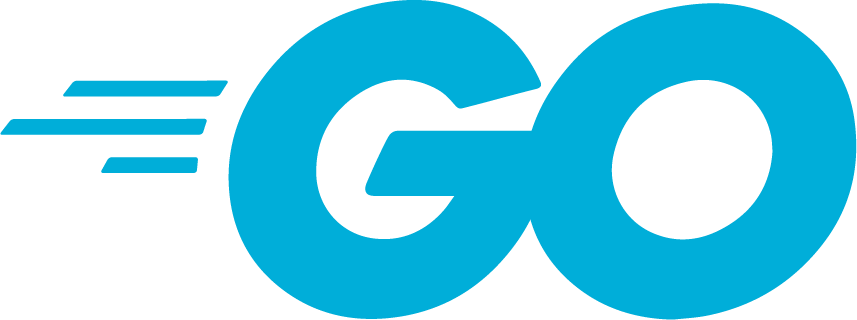

Paradigmas de Programação · UFES · 2026/2

A linguagem que nasceu no Google enquanto seus criadores esperavam o C++ compilar
Paulo S. A. Mônico · Victor Rangel
Prof. Bruno Légora
Parte 1
Compilação lenta de C++
Concorrência difícil
Como a ideia surgiu
Rob Pike conta que a conversa que deu origem a Go aconteceu em setembro de 2007, durante um build de C++ de uns 45 minutos.
Queriam uma linguagem que compilasse em segundos, que equipes grandes conseguissem ler e que tivesse concorrência na própria sintaxe.
PIKE, "Less is exponentially more", 2012 · PIKE, "Go at Google", 2012
Trabalhou na máquina virtual Java HotSpot e no motor JavaScript V8 do Chrome
Esteve na equipe do Unix e do Plan 9 nos Bell Labs e é coautor do UTF-8
Criou o Unix e a linguagem B, que deu origem ao C. Coautor do UTF-8, ganhou o prêmio Turing em 1983
Parte 2
Onde Go se destaca
Onde Go não se destaca
Por quê?
Go foi desenhada para resolver os problemas de um tipo de software, o servidor de rede do Google. Por isso a biblioteca padrão vem com servidor HTTP, criptografia, JSON e testes.
panic; alguns casos são rejeitados já na compilaçãounsafe permite operações fora dessas garantiasnotas := []int{7, 8, 9}
fmt.Println(notas[5])
// panic: runtime error: index out of range [5] with length 3Limites: desreferenciar nil pode provocar panic, e erros retornados podem ser ignorados. Um panic não recuperado encerra o programa.
Por que não tem aritmética de ponteiro?
"Safety. Without pointer arithmetic it's possible to create a language that can never derive an illegal address that succeeds incorrectly."Go FAQ
O FAQ explica que laços com índices podem ser tão eficientes quanto laços com ponteiros, e que essa restrição simplifica o coletor de lixo.
Por que variável não usada é erro?
"The presence of an unused variable may indicate a bug, while unused imports just slow down compilation."Go FAQ
ch := make(chan int)
ch <- 1 // ninguém vai ler
// fatal error: all goroutines are asleep - deadlock!Por que tão pequena?
O Google contratava muitos programadores recém-formados, e o código passava por muitas mãos. Pike diz que a linguagem tinha de ser aprendida rápido por quem veio de C, C++ ou Java.
O que dá trabalho em Go são os conceitos. Sem uma goroutine receptora, o envio ao lado bloqueia; num programa mínimo, o runtime detecta o deadlock e encerra a execução.
PIKE, "Go at Google", 2012
O equilíbrio escolhido
Os autores queriam a velocidade de uma linguagem compilada junto com a comodidade de um coletor de lixo.
O gerenciamento automático de memória tem custos. Comparações com C ou Rust precisam considerar algoritmos, bibliotecas e cargas equivalentes.
GOOS e GOARCH selecionam o alvo da compilação cruzada:GOOS=windows GOARCH=amd64 go build # gera um .exe no Linux
GOOS=darwin GOARCH=arm64 go build # binário para Mac M1Por que um executável só?
Incluir o runtime e os pacotes Go no executável simplifica a distribuição. Bibliotecas C, arquivos externos e serviços ainda podem ser necessários.
Código específico do sistema pode exigir arquivos por plataforma ou build tags. Com cgo, a compilação cruzada também precisa de um compilador C para o alvo.
func media(notas []float64) float64 {
soma := 0.0
for _, n := range notas {
soma += n
}
return soma / float64(len(notas))
}Por que não tem herança?
"Object-oriented programming, at least in the best-known languages, involves too much discussion of the relationships between types, relationships that often could be derived automatically."Go FAQ
No lugar da hierarquia de classes, Go usa composição (uma struct dentro da outra) e interfaces que o tipo satisfaz sem precisar declarar.
O programa evolui com facilidade
gofmt padroniza a formatação, reduzindo diferenças de estilo entre projetosA linguagem evolui sem quebrar
go.mod; segurança pode exigir exceçõesgo fix automatiza transformações suportadas pela ferramenta, não toda atualização de APIsA promessa de compatibilidade
Código conforme à especificação do Go 1 deve continuar compilando e funcionando nas versões futuras da série 1.x.
"Gofmt's style is no one's favorite, yet gofmt is everyone's favorite."Go Proverbs, Rob Pike
Python, por comparação, quebrou boa parte do código existente na passagem da versão 2 para a 3.
func Maior[T cmp.Ordered](a, b T) T {
if a > b {
return a
}
return b
}
Maior(3, 9) // 9
Maior("go", "ada") // "go"Como escolher dependências?
"A little copying is better than a little dependency."Go Proverbs, Rob Pike
O provérbio recomenda avaliar o custo de uma dependência pequena. A biblioteca padrão já cobre HTTP, JSON, criptografia e testes.
Reutilizar uma biblioteca mantida pode evitar trabalho e erros. A escolha depende da qualidade, da manutenção e do problema, não de uma regra de sempre reescrever.
cgo integra Go com C: declarações e includes ficam no preâmbulo acima de import "C"; implementações também podem ficar em arquivos C/*
#include <math.h>
#cgo LDFLAGS: -lm
*/
import "C"
fmt.Println(C.sqrt(2)) // 1.4142135623730951Quais são os custos do cgo?
"Cgo is not Go."Go Proverbs, Rob Pike
Chamadas a C têm custo de transição entre runtimes. O build passa a exigir ferramentas C e pode depender de bibliotecas externas.
A ligação estática com bibliotecas C é possível quando o alvo e as bibliotecas permitem. A compilação cruzada exige ferramentas para o alvo.
gopls é o LSP (Language Server Protocol) desenvolvido pelo próprio time da linguagem, agnóstico de editor de textoParte 3
Os conceitos vistos em aula, aplicados a Go
var x = "pacote"
func main() {
fmt.Println(x) // pacote
x := "função"
{
x := "bloco"
fmt.Println(x) // bloco
}
fmt.Println(x) // função
}Por que estático?
O compilador resolve cada nome antes de rodar o programa, então não há busca de variáveis em tempo de execução e quem lê o código sabe de onde cada nome vem.
É o mesmo modelo de C, Java e da maioria das linguagens atuais.
func(...) { ... }, que podem ser atribuídos a uma variável localAmbiente de referenciamento: profundo
A closure mantém o ambiente léxico em que foi criada: o base usado por somar pertence a criarSoma, não ao chamador.
Ela captura a variável, não uma cópia congelada do valor.
type Operacao func(int) int
func criarSoma(base int) Operacao {
somar := func(x int) int {
return base + x
}
return somar
}
somar := criarSoma(10)
base := 100
fmt.Println(somar(5), base) // 15 100A função retornada continua usando o base da chamada criarSoma(10), mesmo após seu retorno.
?:if é um comando (statement) e não uma expressão: ele não devolve valor, então não dá para escrever x := if ...i++ também são comandos, então if (x = 5) e y = i++ não compilammaior := a > b ? a : b
// invalid character U+003F '?'
maior := if a > b { a } else { b }
// syntax error: unexpected keyword if, expected expressionmaior := a
if b > a {
maior = b
}Por que não tem ternário?
"The reason ?: is absent from Go is that the language's designers had seen the operation used too often to create impenetrably complex expressions. The if-else form, although longer, is unquestionably clearer. A language needs only one conditional control flow construct."Go FAQ
O if permanece um comando. Atribuição fora das expressões também evita confundir if (x = 5) com if (x == 5), um erro comum em C.
for i := 0; i < 10; i++ { // for clássico de C
}
for n > 0 { // o "while"
n--
}
for { // laço infinito
if pronto() {
break
}
}
for i, nota := range notas { // percorre coleções
fmt.Println(i, nota)
}Um único comando de repetição cobre todos os casos. Também não existe do-while.
Por que só for?
Um while é um for sem as cláusulas de início e incremento. Ter duas palavras para a mesma coisa não acrescenta poder à linguagem, só mais uma regra para aprender.
"It unifies for and while and there is no do-while."Effective Go
Vale o mesmo critério do ternário, uma construção por conceito. É assim que a linguagem fica com 25 palavras reservadas.
char. rune, apelido de int32, representa um ponto de código Unicodebyte é apelido de uint8; string é uma sequência imutável de bytes, normalmente usada para UTF-8enum. Usam-se constantes com iota, que avança a cada especificação no bloco constbool, inteiros de 8 a 64 bits com e sem sinal, float32, float64 e complexoslen("ção") // 5 (bytes)
len([]rune("ção")) // 3 (runas)
type Dia int
const (
Domingo Dia = iota // 0
Segunda // 1
Terca // 2
)Por que runa e não char?
Em UTF-8, "ç" e "ã" ocupam dois bytes cada. Uma runa representa um ponto de código; um caractere visual pode combinar várias runas. Strings não precisam conter UTF-8 válido.
Por que não tem enum?
Constantes com iota representam enumerações comuns, mas não fecham o conjunto de valores de Dia: Dia(99) e Segunda + Terca são válidos. Restrições exigem validação.
// array: tamanho fixo
notas := [3]float64{7, 8.5, 9}
// slice: uma janela sobre um array
v := notas[1:3] // v acessa do indice 1 até o 2 (3-1)
// slice: array dinâmico
nomes := []string{"ana"}
nomes = append(nomes, "caio")
// map: tabela hash
idade := map[string]int{"ana": 20}
// struct: produto cartesiano
type Aluno struct {
Nome string
Notas []float64
}Por que array e slice?
O array é um valor de tamanho fixo e é copiado inteiro na atribuição. É previsível, mas pouco prático. O slice é uma pequena estrutura (ponteiro, tamanho e capacidade) que aponta para um array e cresce com append.
Em Go, quase todo código usa slices. O array fica por baixo, como o armazenamento.
Por que map embutido?
Tabela hash é tão comum em servidores que os autores a puseram na linguagem, com sintaxe própria, em vez de numa biblioteca.
type Forma interface {
Area() float64
}
type Circulo struct{ Raio float64 }
func (c Circulo) Area() float64 {
return math.Pi * c.Raio * c.Raio
}
type Quadrado struct{ Lado float64 }
func (q Quadrado) Area() float64 { return q.Lado * q.Lado }
// Ambos satisfazem Forma sem declarar implements
formas := []Forma{Circulo{1}, Quadrado{2}}
for _, f := range formas {
fmt.Println(f.Area())
}Por que não tem implements?
Segundo o FAQ, um tipo satisfaz uma interface ao implementar seus métodos. Isso permite definir interfaces sem modificar os tipos existentes. Go FAQ
Dá para criar uma interface depois que o tipo já existe, até para tipos de uma biblioteca que você não pode editar.
"The bigger the interface, the weaker the abstraction."Go Proverbs
| Classificação | Go | Como aparece |
|---|---|---|
| Estática ou dinâmica | Estática | variáveis têm tipo estático; interfaces também contêm um tipo dinâmico |
| Forte ou fraca | Forte | variáveis numéricas de tipos diferentes exigem conversão explícita |
| Manifesta ou inferida | As duas | var x float64 = 1 ou x := 1.0 |
| Compatibilidade | Nominal para tipos definidos, estrutural para interfaces | ver abaixo |
type Celsius float64
type Fahrenheit float64
var c Celsius = 30
var f Fahrenheit = c // erro: tipos diferentes
f = Fahrenheit(c*9/5 + 32) // conversão explícitaPor que os dois tipos de compatibilidade?
Com compatibilidade nominal, o compilador impede somar Celsius com Fahrenheit, mesmo sendo os dois float64 por baixo.
Nas interfaces a compatibilidade é estrutural, então qualquer tipo com os métodos certos serve, inclusive tipos escritos antes da interface existir.
type Numero interface {
~int | ~int64 | ~float64
}
func Soma[T Numero](xs []T) T {
var total T
for _, x := range xs {
total += x
}
return total
}
Soma([]int{1, 2, 3}) // 6
Soma([]float64{1.5, 2.5}) // 4
type Pilha[T any] struct{ itens []T }internal/ só pode ser importado por código na árvore enraizada no diretório pai de internalpackage conta
type Conta struct {
Titular string // público
saldo float64 // privado ao pacote
}
func (c *Conta) Depositar(v float64) {
c.saldo += v
}Por que a letra maiúscula?
Encapsular por pacote em vez de por classe combina com a falta de classes: tipos do mesmo pacote enxergam os campos privados uns dos outros, como partes de um mesmo módulo.
malloc nem freefunc novoContador() *int {
n := 0
return &n // seguro: n vive enquanto for referenciado
}$ go build -gcflags=-m
./main.go:2:2: moved to heap: nSaída ilustrativa: a alocação depende do contexto e das otimizações, como inlining.
Por que coletor de lixo?
Para o FAQ, controlar o tempo de vida de cada objeto é uma das maiores fontes de trabalho em programas de sistema. Com concorrência fica pior, porque é difícil saber quando nenhuma goroutine usa mais um dado.
Por que o programador não escolhe pilha ou monte?
"From a correctness standpoint, you don't need to know."Go FAQ
Em qualquer dos dois lugares o programa funciona igual. A escolha só muda o desempenho, então o compilador decide sozinho.
io.Reader e io.Writer abstraem leitura e escrita de bytes; um tipo pode implementar uma ou ambasencoding/json, encoding/csv e encoding/gob usam essas interfacesdatabase/sql oferece outra abstração e precisa de um driver para o banco escolhidotype Reader interface {
Read(p []byte) (n int, err error)
}
type Writer interface {
Write(p []byte) (n int, err error)
}
func salvar(w io.Writer, a Aluno) error {
return json.NewEncoder(w).Encode(a)
}
salvar(arquivo, ana) // grava no disco
salvar(os.Stdout, ana) // mostra no terminal
salvar(conexao, ana) // manda pela redePor que interfaces tão pequenas?
Essas interfaces exigem um método cada. A função salvar aceita qualquer Writer, seja para disco, terminal ou rede.
Um gzip.Writer escreve dados comprimidos em outro Writer. A composição lembra os pipes do Unix, propostos por Doug McIlroy e implementados por Ken Thompson.
func dobrar(x int) { x *= 2 }
func dobrarP(x *int) { *x *= 2 }
n := 5
dobrar(n) // n continua 5
dobrarP(&n) // n vira 10
func zerar(s []int) { s[0] = 0 }
s := []int{1, 2, 3}
zerar(s) // s vira [0 2 3]Por que só por cópia?
O FAQ explica que a função recebe uma cópia do valor: copiar um ponteiro, slice ou map não copia os dados referenciados. Go FAQ
dobrarP(&n) altera n, mas uma chamada também pode receber um ponteiro já existente, sem &. zerar(s) altera elementos do array compartilhado; não substitui o slice do chamador.
go antes da chamadafunc atender(conn net.Conn) {
defer conn.Close() // defer é um LIFO quando a função encerra
// lê e responde a um cliente
}
for {
conn, err := servidor.Accept()
if err != nil { // encerra a função em caso de erro
return
}
go atender(conn) // uma goroutine por cliente
}Por que não usar processos ou threads do sistema?
Tanto processos e threads do sistema têm custos que podem tornar inviável uma por cliente em grande escala. Pools e E/S assíncrona são alternativas tradicionais.
Com goroutines baratas, cada cliente ganha a sua e o código de atender é sequencial e simples. Quem cuida de encaixar tudo nos núcleos é o runtime.
Otimização de recursos em tarefas IO-Bound
chan, <- e select fazem parte da linguagemchan<- int só envia e <-chan int só receberange termina quando o canal foi fechado e todos os valores pendentes foram recebidosselect escolhe uma operação pronta; se várias estiverem prontas, a escolha é pseudoaleatória uniformefunc produtor(saida chan<- int) {
for i := 0; i < 5; i++ {
saida <- i // envia
}
close(saida)
}
fila := make(chan int, 2) // buffer de 2
go produtor(fila)
for v := range fila { // recebe até fechar
fmt.Println(v)
}
select {
case msg := <-entrada:
tratar(msg)
case <-time.After(time.Second):
fmt.Println("timeout")
}A biblioteca padrão também tem o modelo clássico
sync.Mutex e sync.RWMutex para exclusão mútuasync.WaitGroup para esperar um grupo de goroutines terminarsync.Once para inicializar algo uma vez só, e sync/atomic para operações atômicasgo test -race detecta condições de corrida enquanto os testes rodamvar mu sync.Mutex
mu.Lock()
contador++
mu.Unlock()A filosofia
"Don't communicate by sharing memory, share memory by communicating."Go Proverbs, Rob Pike
Os canais têm inspiração no CSP, Communicating Sequential Processes, de Tony Hoare (1978). Uma estratégia é passar a responsabilidade pelos dados de uma goroutine para outra.
Essa exclusividade é uma disciplina do programa: enviar ponteiros ou slices não impede acesso compartilhado. Canais e mutexes são alternativas conforme o problema.
try/catch. Falhas esperadas são normalmente valores error, por convenção no último retornoif err != nil%w, e errors.Is procura um erro específico na cadeiapanic sinaliza situações excepcionais; recover pode interrompê-lo quando chamado diretamente numa função adiada da mesma goroutinef, err := os.Open("notas.txt")
if err != nil {
return fmt.Errorf("abrindo notas: %w", err)
}
defer f.Close()Por que não tem exceção?
"We believe that coupling exceptions to a control structure, as in the try-catch-finally idiom, results in convoluted code. It also tends to encourage programmers to label too many ordinary errors, such as failing to open a file, as exceptional."Go FAQ
Falhar ao abrir um arquivo é algo esperado, então vira um valor tratado como qualquer outro, e dá para ver na própria função todos os caminhos que o programa pode seguir.
O preço é a verbosidade. Propostas para encurtar o if err != nil já foram feitas e rejeitadas pela comunidade.
Parte 4
Se você usa Docker ou Kubernetes, já roda código Go todo dia
containerd e o runc por baixo, que são os programas que de fato criam os contêineresPor que Go aqui?
Um executável Go com poucas dependências simplifica a imagem. Contêineres também podem incluir bibliotecas e outros arquivos; um binário estático não é obrigatório.
Orquestrar milhares de contêineres é, na prática, manter milhares de conexões de rede abertas. As goroutines foram pensadas para esse tipo de carga.
Infraestrutura como código (HashiCorp)
Monitoramento
Bancos e servidores
Ferramentas de linha de comando
CLIs em Go puro geralmente podem ser distribuídas em um executável por sistema e arquitetura, sem runtime separado. Algumas ferramentas usam componentes nativos ou arquivos adicionais.
Em produção
Perguntas?
Paulo S. A. Mônico · Victor Rangel